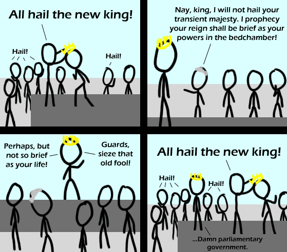

Comic JK 423
When I Feel Like It
⇤
<
?
>
⇥

⇤
<
?
>
⇥
Forum
.
RSS
.
Digg
.
Facebook
.
Reddit
.
Twitter
.
Stumbleupon
Enter your thoughts on number 423 here. Please, no spamming, trolling, or phreaking. Your mother is almost as boring as the following discussion: first i don't get it > Neither do I, actually. >>You must be American... >>> I'm Czech and I don't get it. Why would I have to be American not to get it?! The verb form of prophesy is spelled prophesy, with an S. That said, I didn't get the comic either, though the alt-text was good. English parliamentary elections... it was more or less a tie so there are two people working as prime ministers. > Hey! I'm still a king, too! Look! I've got the shiny hat and everything! >....I just like to share, that's all. >> LOLness is LOL It's about the hung parliament in the UK. >You've gotta love our defunct political system >>people said they wanted an end to hidden deal-making in politics... so they voted for a hung parliament... ( oh the painful irony ) >>>New Zealand had one of those in the early 1990s. Three months went by before it was resolved. Three months without a government. Nobody noticed. >>>I voted for the hung parliament intentionally. The idea was to end up with a government that was too busy arguing with itself to screw up the country... >>>>it's more likely that voting for an inconclusive result will produce an outcome that no-one actually wants, but all are stuck with... ( "painting the wall yellow" as it were... ) >>>>>You cant vote for a hung parlement, you vote for one of the parties. >>>>>>well actually, one can vote *for* a hung parliament... by voting for a specific party - not because one supports that party, but because one is aming for a specific result in that constituency ( whether the aim is to retain or dislodge the incumbent ) - and hoping that enough people do the same in enough constituencies... In the UK, the practice used to be called "tactical voting" and at every election for almost 20 years, certain politicians and pundits have encouraged voters to vote "tactically", with the specific intention of causing a hung parliament, thus granting influence to the smaller parties... >>>>>>>Exactly. I implemented tactical voting to bring about a hung parliament. People were fed up with Labour, but many didn't trust the Conservatives. So a lot voted for Liberal Democrats. The Conservatives were the largest party, but didn't have an overall majority; Labour didn't have enough MPs to form a government, even with the Liberal Democrats, but the Conservatives did, so we now have a Conservative - Liberal Democrat coalition. So far it looks remarkably stable. Many people think it's good, as the two parties have agreed a set of policies that leave out the extremes; others are upset because they'd expected the Liberal Democrats to support Labour. Cameron (C) is Prime Minister; Clegg (LD) is Deputy Prime Minister. fail